| 双移动副四杆机构 | |||
机构名称及尺寸条件 |
机构特性 |
机构传动函数及应用 |
|
| 移动导杆机构 | 曲柄移动导杆机构 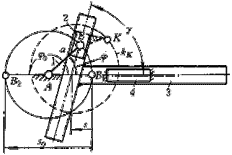 (1)曲柄1杆长为a (2)滑块2导路中心线与导杆导路中心线间夹角为γ |
(1)当曲柄1等速转动时,导杆3作往复变速移动;位移s=a(1-cosψ)+asinψ/tanγ;导杆行程S0 =2a (2)曲柄主动时,机构无死点,且各位置的传动角γ 23 =γ=常数 (3)γ=90°时的曲柄移动导杆机构常称为正弦机构. |
(1)机构传动函数为 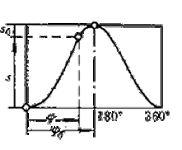 (2)机构应用
|
摆杆移动导杆机构 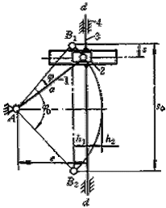 (1)摆杆1杆长为a (2)移动导杆3的导路中心线dd不通过摆杆1的摆动中心A,偏距为e (3)尺寸h1 =h2 |
(1)当摆杆1往复摆动时,导杆3在固定导路dd中往复移动 (2)当摆杆如图示摆过角ψ0 时,导杆3移动距离(行程)为 S0 =2asin(ψ0/2) 摆杆任一角位移ψ时,摆杆的位移为 s=S0/2-asin(ψ0/2-ψ) (3)摆杆1主动时,机构传动角γ23 =90° (4)机构尺寸 e=a/2*(1+cos(ψ0/2)) |
(1)机构传动函数为 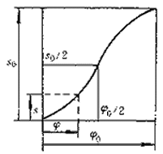 (2)机构应用
|
|
双转动导杆机构 |
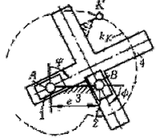 导杆1和2的固定转动中心A和B间距离为偏距e |
(1)分别与机架3组成转动副A和B的导杆1和2均能作整周转动,且两者角速度相等,即 ω1=ω2 且转向相同 (2)当两导杆的轴偏距e改变时,机构传动并不中断,且两导杆的角速度仍然相等. (3)当偏距e增大时,滑块4相对导杆1和2的滑动速度也增大,且 υA 1 A 4 =ωecosφ, υB 1 B 4 =ωesinφ |
(1)机构传动函数为 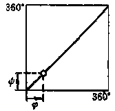 (2)机构应用 1.常用于连接两轴以满足定传动比且两轴距经常发生变化的传动机构，如十字沟槽联轴器 2.用作车椭圆体的夹具 |
双滑块机构 |
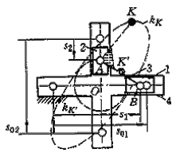 连杆点K′为AB中点,故机构尺寸AK′=BK′ |
(1)分别与滑块1和2组成移动副的导杆4为机架 (2)机构运动时,连杆3上AB线段中点K′的轨迹为一以点O为圆心,OK′为半径的圆kk′ (3)连杆3上除点A、B、和K′外，其余点的连杆曲线为中心于点O的椭圆kk，因此常将此机构称为椭圆仪机构。 (4)当添加附加杆OK′后，可去除滑块2或3，此时连杆点A或B的轨迹为直线，且过点O |
(1)机构传动函数为 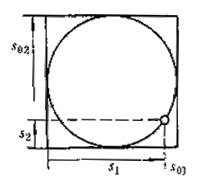 (2)机构应用 常用于绘制椭圆以及用作解算装置和夹具等。 |
滑块导杆机构 |
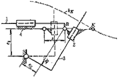 a.偏距为e 1 和e 2 单偏置滑块导杆机构 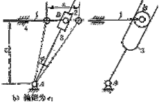 b. 偏距为e 1 |
(1)根据机构结构的不同，可将滑块导杆机构分为双偏置滑块导杆机构（图a）和单偏置滑块导杆机构（图b） (2)若采用导杆3为主动件，可利用其他机构（如凸轮机构）驱动导杆，从而使滑块1实现给定的运动规律。 (3)在仪表机构中常高副（滚子与导槽）代替移动副。 |
(1)机构传却函数为 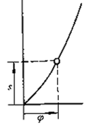 (2)机构应用
|